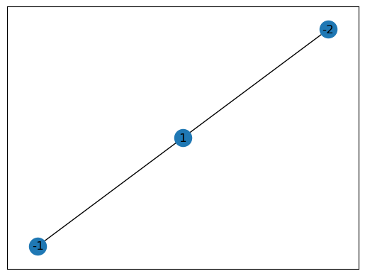
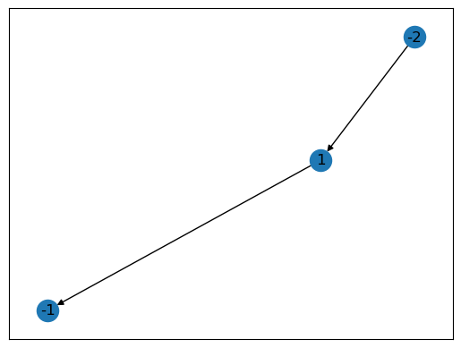
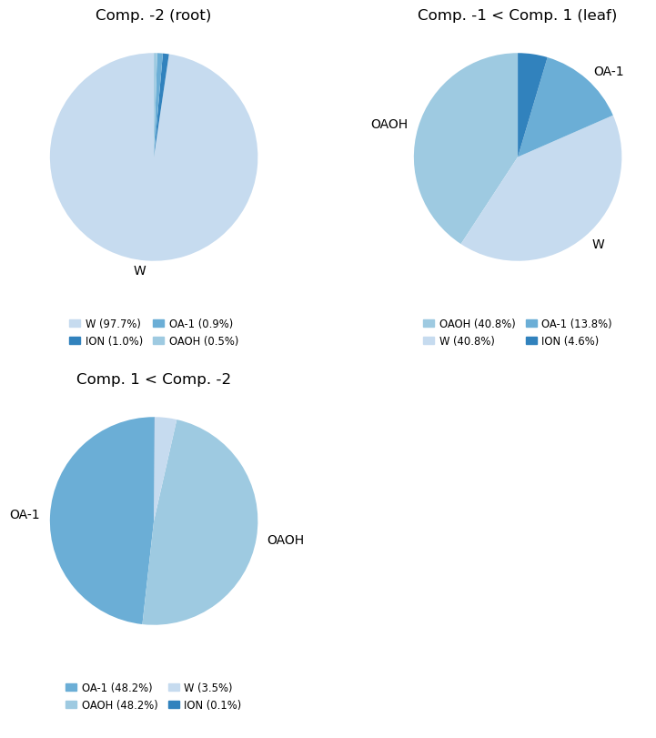

MDVContainment – Tutorial 1 (MartiniWorkshop 2025)
This tutorial makes use of the helper_tutorial_01.py and the bicelle.gro structure, which can be downloaded by clicking on their respective link. Make sure to put these files in the same folder as you use to run this tutorial. To install MDVContainment, please take a look at the the project’s github page: https://github.com/BartBruininks/mdvcontainment.
What is Containment
Containment can be simply thought of as something surrounding something else completely (Fig. 0). This is useful for analyzing volumetric data in a hierarchical manner, allowing for robust processing at high throughput. This means containment it is a property which combines:
- Components How the total space is partitioned (Strongly Connected Components analysis, SCC).
- Contact Graph Components that share a boundary are connected with an edge.
- Containment Graph A component can be contained by another component, causing its edge designating the contact to point from the container to the content. I.e. the contained component lies downstream of the container component in the acyclic directed graph (DAG). Only the directed edges are present in the containment graph.
Identifying inside and outside is non-trivial in periodic spaces and MDVContainment uses the concept of percolation to solve this problem. A component is considered contained if its inverse has a higher percolation number (rank) than the component itself, where the inverse of a component is all of space which is not the component in question. Meaning it also works for objects spanning the PBC such as a hollow periodic cylinder.
The binary nature of the component labeling (all labels are strongly connected) in combination with the containment status of individual components is enough to collapse the contact graph into the containment graph (adding direction and defining what is outside). The manuscript of this work is available as a preprint.
Fig. 0 Some examples of containment in periodic spaces. (A) A vesicle formed from a bicelle. (B) A periodic cylinder formed by dye molecules. (C) A lipoplex hovering above a membrane. D A horrific triple stacked bilayer system in which one of them has a pore. Try to wrap your head around that one with your intuition… In all the figures the red and blue densities represent lipid and solvent phases respectively. A density is rendered opaque if it does not have a child (it is a leaf in the containment graph), otherwise it is transparent (is a container). The arrows point from container to content. One can put every content into its container recursively to obtain the full box (albeit fragmented as is the case in system C).
Theory
We will start by clarifying the objective and what we mean by containment. To do so we will explicitly state the goal and eight axioms. The goal is the classifier we wish to obtain. The axioms are an extension of well-known mathematical concepts. Concepts such as connected components and percolation are taken for granted. Each axiom comes with a figure, to enforce what is intended.
Goal & Axioms
Goal
To obtain a definition of containment resulting in a containment graph spanning the complete space. The containment graph is a directed acyclic (multi) graph. The components are the nodes in the graph and the directions of the edges indicate containment. The graph should satisfy the following conditions: First, a node cannot have more than one inward pointing edge. A, node can have more than one outward pointing edge. Second, the alteration of the containment hierarchy downstream should never affect the containment hierarchy upstream. All these conditions are satisfied by the axioms below and result in unambiguous specification of the containment hierarchy. An example of such a containment graph is given in Fig 1.
Fig. 1 A 2D boolean density (left) and its corresponding containment graph (right) of four components in 2D periodic space (R2/Z2). A component contains all downstream components in the containment graph, plus itself. A single component (A) contains all the other components ({A, B, C, D}). There is one nested container (B) which also contains a component (C). The graph was drawn using https://graphonline.ru/en/.
Axiom 1. space
Space is regular and not curved (e.g. R, Z, R/Z, etc.; Fig. 2).
Fig. 2 Axiom 1. space. The space outlined with a square as a boundary. It needs not be a square nor does it has to have a boundary, this is just for illustrative purposes.
Axiom 2. components
The binary partitioning of space results in connected components which can be True or False. Whenever we use the word component we mean strongly connected component unless stated otherwise (Fig. 3).
Fig. 3 Axiom 2. components. The densities {A, D} are represented in peach. The void components {A, C} are white.
Axiom 3. complements
The complement of a component is all of space which is not the component, therefore a complement does not need to be connected. The complement of a component A is annotated as !A (Fig. 4).
Fig. 4 Axiom 3. complements. The complement !A is drawn in peach and its corresponding component A is drawn in white.
Axiom 4. rank
The rank (ρ) of a component, or its complement, is defined by the amount of orthogonal dimensions in which it percolates space [7]. The rank of a component or complement (A of rank 2) is indicated with a preceding subscript number (2A). Since a complement does not need to be connected, the rank of a compliment is the highest rank among the ranks of its components (Fig. 5).
Fig. 5 Axiom 4. rank. The rank of the void A with a dot (2), periodic line (1) and periodic net (0) are shown from left to right. The corresponding density B is of rank 0, 1 and 2 reciprocally.
Axiom 5. component containment
A component is contained if its complement is of higher rank. The containment status of a component (A) is annotated with a subscript c (Ac; Fig. 6).
Fig. 6 Axiom 5. component containment. The components {B, C, D} are contained, A is not. The densities {A, D} are represented in peach. The void components {A, C} are white).
Axiom 6. component contacts
Two components are in contact if they share a boundary. A contact between a component (A) and another component (B) is annotated with a tilde (A ∼ B). The collection of all contacts is called a contact graph (Fig. 7).
Fig. 7 Axiom 6. component contacts. Component A is in contact with components {B, D} and B is in contact with C. The densities {A, D} are represented in peach. The void components {A, C} are white. The boundaries are represented with black curves.
Axiom 7. neighbor containment
A component is contained by a neighboring component in the contact graph if it is contained and the neighbor is not. Containment of a component (A) by another component (B) is annotated with an arrow (B → A). The collection of all containment hierarchy in a space is called its containment graph (Fig. 8).
Fig. 8 Axiom 7. neighbor containment. Component A contains B and D. The densities {A, D} are represented in peach. The void components {A, C} are white.
Axiom 8. recursive neighbor containment
A component which is contained by a neighboring component contains all other components it is in contact with (Fig. 9).
Fig. 9 Axiom 8. recursive neighbor containment. Component C is contained by B due to recursion. The densities {A, D} are represented in peach. The void components {A, C} are white.
For questions or more information feel free to send an email to the author of this math and software (BMH Bruininks): bartbruininks@gmail.com
Content of this Tutorial
To determine the containment hierarchy on the bicelle test system (Fig. 10) and then perform some basic analysis on it. This system contains a vesicle/bicelle made of oleic acids. The bicelle is solvated in water and inside the bicelle is a small which is also filled with water. Here you will get used to using mdv.Containment and run it directly on MDAnalysis atomgroups. We will perform a volume, genus and composition analysis of the components/containment.
- Load a structure file and prepare for containment analysis
- Running the containment analysis
- Learn to work with the containment graph
- Volumetric Analysis
- Surface Analysis
- Compositions Analysis
- Assignments
- Flex plotting
- Conclusion
- Answers to the question
Bicelle Vesicle Containment
Imports
# Containment
import mdvcontainment as mdv
import mdvcontainment.composition_logic as cl
from mdvcontainment.containment_main import VoxelContainment
# Load the helper functions for the tutorial
from helper_tutorial_01 import *
# MD programs
import MDAnalysis as mda
import freud
from mdvwhole import whole
# General python
import numpy as np
from collections import defaultdict
import networkx as nx
# Helper python
from skimage import measure
import open3d as o3d
# Turning off warnings for MDA as it tends to complain a lot with CG data
import warnings
# Suppress all warnings from a specific package
warnings.filterwarnings("ignore", module="MDAnalysis")Loading the MD Data
MDVContainment is made so it works nicely with MDAnalysis for its structure file support (PDB, GRO, XTC, etc.). Start with creating an MDAnalysis universe from your structure file. We will make a copy of the wrapped and unwrapped structure (using mdvwhole) so we can use those for comparison if we want.
# The path to the desired structure file
current_structure_path = 'bicelle.gro' # Change me to point to a structure!# This GRO file is already made whole but lets wrap it up
u = mda.Universe(current_structure_path)
u.atoms.wrap() # Wrap everything in the PBC box so no points lie outside the dimensions
u.atoms.write('wrapped.pdb') # Write the atomgroup after its wrapped in the box
wrapped_positions = np.copy(u.atoms.positions)# Let's make the structure whole so we can play a bit and see if it matters
atomgroup_selection = u.select_atoms('not resname W WF ION') # The selection to make whole
resolution = 0.5 # Sets the voxel size for the resolution
closing = True # Uses binary dilaten and then erosion to close small gaps
whole_universe = whole.Whole(atomgroup_selection, 0.5, closing,).voxels.atomgroup.universe# Check if the wrapping and unwrapping worked out
print(f'Wrapped positions and unwrapped positions are idential (False is good): \
{np.all(whole_universe.atoms.positions == wrapped_positions)}')Wrapped positions and unwrapped positions are idential (False is good): False# Write the atomgroup after it has been made whole
whole_universe.atoms.write('whole.pdb')Fig. 10 A VMD render of the system. The bicelle is made whole over PBC using MDVWhole. It might be useful to keep in mind that, broken or not, it does not matter for MDVContainment.
General design of MDVContainment
The output of the containment analysis is more or less an MDAnalysis wrapper around mdvcontainment.containment_main.VoxelContainment. It handles all bookkeeping for moving from an atomgroup to (segmented) voxels and back. When you run mdvcontainment.Containment(), it converts the input atomgroup into a boolean grid and performs the analysis on the grid. Then the analysis can be projected back into atomgroup(s).
Tip: Do not forget python allows you to use help() and dir() on objects to explore them.
To work with the voxel containment data, we can use the .voxel_containment attribute of the containment output. This will be demonstrated below in some examples.
Running the Containment Analysis
Running a containment analysis requires very little from the user, it requires an atomgroup, a resolution for the voxel size (nm), and weather or not you want to close single voxel holes using binary closing. The resolution should never be smaller than the first neighbor distance of the condensed phase you are studying. For Martini CG systems this is about 0.5 nm, with closing to fill small holes. For atomistic data a smaller resolution could be used, although usually a resolution of 0.5 with or without closing works pretty good. In general a smaller value for the resolution results in an increase in computational load, both for memory and compute.
# Selecting all tail beads (see what happens if you exclude the first tail bead as well!)
#selection_atomgroup = u.select_atoms('name [CD][12345][AB]') # A slightly more conservative selection for the lipid densities
selection_atomgroup = u.select_atoms('name [CD][2345][AB]')
resolution = 0.5 # The voxel size in nanometers
closing = True # Uses binary dilation and erosion to close tiny holes
containment = mdv.Containment(selection_atomgroup, resolution, closing)
print(containment) # Shows the containment hierarchyWARNING: beta/tempfactors already set in the universe, and will be overwritten with the component ids.
Containment Graph with 3 components (component: nvoxels):
└── [-2: 59600]
└── [1: 3868]
└── [-1: 532]Which component(s) are the ones occupied with your selection?
Contact graph
The contact graph annotates every components contacts where a component is considered in contact if they share on of their 26 voxel neighbors (they share a vertex of their voxel simplices). The contact graph is always strongly connected.
# The contacts graph
contact_graph = containment.voxel_containment.component_contact_graph
nx.draw_networkx(contact_graph)
plt.show()
# Check if the contact graph is indeed strongly connected
print(f'The amount of connected components in the contact graph: {len(list(nx.connected_components(contact_graph)))}')The amount of connected components in the contact graph: 1Containment graph
The containment graph annotates containment with a directed edge pointing from the container to the content. Their might be multiple outsides in a system (like in the case of a periodic bilayer), meaning the containment graph might be disconnected. This is due to the fact that the directed edges in the containment graph are a subset of the undirected edges in the contact graph.
# Draw the containment graph
containment_graph = containment.voxel_containment.containment_graph
nx.draw_networkx(containment_graph)
plt.show()
Which component is contained by component 1?
# Check if the containment graph is strongly connected
print(f'The amount of connected components in the containment graph: {len(list(nx.connected_components(contact_graph)))}')The amount of connected components in the containment graph: 1The containment graph is also strongly connected, meaning the whole box can be described as a single recursive containment branch (there is only one absolute outside).
Rank
The rank of a component is the amount of orthogonal dimensions in which is spans the PBC. In other words, how intrinsically periodic is a component.
# The rank (percolation number) per component
ranks = containment.voxel_containment.component_ranks
_ = [print(f'The rank for component {int(key)} is: {int(value)}') for key, value in ranks.items()]The rank for component 1 is: 0
The rank for component -1 is: 0
The rank for component -2 is: 3What densities would have rank 1?
Grids
The boolean grid used for the segmentation and the integer labeling grid are both exposed in containment.voxel_containment
# The selection grid
boolean_grid = containment.voxel_containment.grid
print(f'The boolean grid has the following dimensions: {boolean_grid.shape}')
print(f'The boolean grid contains the following unique values: {np.unique(boolean_grid)}')The boolean grid has the following dimensions: (40, 40, 40)
The boolean grid contains the following unique values: [False True]How many voxels are there in total?
# The 26 neighbors connected component labeling grid,
# True grid values have positive labels and False grid values have
# negative labels (taking PBC into account).
labeled_grid = containment.voxel_containment.components_grid
print(f'The labeling grid has the same dimensions as the boolean grid: {boolean_grid.shape == labeled_grid.shape}')
print(f'The labeled grid contains the following unique values: {np.unique(labeled_grid)}')The labeling grid has the same dimensions as the boolean grid: True
The labeled grid contains the following unique values: [-2 -1 1]Tip: You can take a look at the help and dir help(containment) and/or dir(containment.voxel_containment) to have a look at your options to work with the containment object (at the voxel level).
Conclusion
- There is a large component {-2} which is the outside. It is negative so it is not made out of atoms in our selection. Our selection contained all lipid tails so this means the outside is made out everything else (water, ions and linkers). It has a percolation number of 3 meaning it is periodic in all the dimensions of space.
- Inside this water compartment lies our only positive component {1}, meaning it is made out of atoms in our selection. Thus, we have a drifting lipid density in water.
- Finally, inside this lipid density lies one tiny compartment {-1}, as indicated by their voxel counts. As they are negative this must be another volume of non-lipid tails. However, if we select also the first lipid tail bead, we get two small compartments inside the lipid vesicle.
Without having to open the structure with a 3D viewer, we are pretty well informed about what is currently present in our simulation. This allows for high throughput processing of complex systems and morphologies!
Containment Graph Handling
Being able to define components not on their local identity, but their global graph identity can be a big deal for handling high throughput data. This can be done by using the containment graph, as it contains information of how a single component (or multiple) is nested in the global environment.
Using roots and leafs
This can for example be used to auto analyze the content of a container if present using the concept of roots and leafs. A root is a node in a directed acyclic graph (DAG) which has no parent, and leaf is a node which has no children. We can recognize all components which contained by the fact that they have at least one parent. Thus all non-root nodes in the containment graph are contained.
Can a root node be a leaf node?
# We convert the data types to a simple int for nicer printing
all_nodes = set(int(i) for i in containment.voxel_containment.nodes)# All nodes with no parents
root_nodes = set(int(i) for i in containment.voxel_containment.root_nodes) # All nodes with no children
leaf_nodes = set(int(i) for i in containment.voxel_containment.leaf_nodes) # Perform some selection to filter contained and uncontained nodes
contained_nodes = all_nodes - root_nodes
not_contained_nodes = all_nodes - contained_nodes
print(f'The following nodes are not contained: {not_contained_nodes}')
print(f'The following nodes are contained: {contained_nodes}')The following nodes are not contained: {-2}
The following nodes are contained: {1, -1}Relative component acquisition
Using a list of component ids for relative component querying, traveling up and down the DAG of containment.
# Get the children of nodes (we turned it into a set so we convert it to list)
child_nodes = set(int(i) for i in containment.voxel_containment.get_child_nodes(list(root_nodes)))
print(f'The root nodes: {root_nodes} have the following child nodes: {child_nodes}')The root nodes: {-2} have the following child nodes: {1}# Get the parents of nodes
parent_nodes = set(int(i) for i in containment.voxel_containment.get_parent_nodes(list(leaf_nodes))) # Again we should use a list here
print(f'The leaf nodes: {leaf_nodes} have the following parent nodes: {parent_nodes}')The leaf nodes: {-1} have the following parent nodes: {1}# Get all downstream nodes (includes self)
downstream_nodes = set(int(i) for i in containment.voxel_containment.get_downstream_nodes(list(root_nodes)))
print(f'The root nodes: {root_nodes} have the following downstream nodes: {downstream_nodes}')The root nodes: {-2} have the following downstream nodes: {1, -2, -1}# Get all upstream nodes (includes self)
upstream_nodes = set(int(i) for i in containment.voxel_containment.get_upstream_nodes(list(leaf_nodes)))
print(f'The leaf nodes: {leaf_nodes} have the following upstream nodes: {upstream_nodes}')The leaf nodes: {-1} have the following upstream nodes: {1, -2, -1}Volumetric Analysis
The volume of the components is indicated by the voxel count per component in the containment graph and is stored in .voxel_containment.voxel_counts.
If we want to be precise about the exact volume we should not naively assume that our target voxel volume (resolution^3) is perfectly matching the resulting voxel volume. This is due to the fact that MDVContainment has to pick the resolution such that it perfectly tiles the unit cell. Therefore MDVContainment needs to adjust the requested resolution slightly to satisfy this constraint. Thus to obtain the exact volumes we need to query the voxel counts in each component and multiply it by our exact single voxel volume.
# Determining the single voxel volume
nvoxels = np.prod(containment.voxel_containment.grid.shape)
box_volume = mda.lib.mdamath.box_volume(u.dimensions) / 1000 # We need to correct that MDA is A^3 instead of nm^3.
voxel_volume = box_volume / nvoxels
print(f'A single voxel has a volume of {voxel_volume:.3f} nm^3, which is {abs(resolution**3 - voxel_volume):.3f}\
nm^3 off from the target resolution ({resolution} nm) with a volume of {resolution**3} nm^3.')A single voxel has a volume of 0.123 nm^3, which is 0.002nm^3 off from the target resolution (0.5 nm) with a volume of 0.125 nm^3.# All the nodes in the containment graph
component_ids = [int(id) for id in containment.voxel_containment.nodes]
print(component_ids)[-2, -1, 1]# Obtaining the formatted counts
voxel_counts = {int(id):float(count) for id, count in containment.voxel_containment.voxel_counts.items()}
print(voxel_counts){-2: 59600.0, -1: 532.0, 1: 3868.0}# Moving from counting voxels to quantitative volume determination
volumes = {int(id):float(count*voxel_volume) for id, count in voxel_counts.items()} # Some additional formatting for nice printing
print(volumes) # The component volumes in nm^3{-2: 7350.741135707312, -1: 65.61399805698474, 1: 477.05816632409204}# Determining the total volume of the bicelle vesicle and its content combined
active_components = containment.voxel_containment.get_downstream_nodes([1]) # Includes the lipid density as well!
combined_volume = 0
for component in active_components:
combined_volume += volumes[component]
print(f'The volume of the lipid component and its content is: {combined_volume:.02f} nm^3')The volume of the lipid component and its content is: 542.67 nm^3What advantage does it bring to make the voxels perfectly tile the box?
Surface Analysis
Although containment is a volumetric analysis, nothing is stopping us from converting our volume to a (set of) surfaces. The advantage is that certain observables like surface area are not converging nicely for voxels as the voxel volume decreases – like volume does. Another thing to keep in mind is that a volume has no genus, but a surface does, therefore for certain topological analysis it might be important to work with explicit surfaces instead!
Marching cubes
We can use the marching cubes algorithm to transform our density into (a) surfaces.
# Use marching cubes to obtain the contour surfaces
active_components = 1
combined_grid = containment.voxel_containment.get_voxel_mask([active_components])
vertices, faces, normals, values = measure.marching_cubes(combined_grid.astype(float), level=0.5, spacing=(1.0, 1.0, 1.0))Check how PBC is taken into account for the mesh generation!
Process mesh in open3d
def create_mesh_from_arrays(vertices, faces, visualize=False, write=False):
"""
Returns an open3d mesh object and writes the mesh to the given path for a ply file (example.ply) if write specifies a path.
"""
# Create the mesh and set vertices and triangles during initialization
mesh = o3d.geometry.TriangleMesh(
vertices=o3d.utility.Vector3dVector(vertices),
triangles=o3d.utility.Vector3iVector(faces)
)
mesh.triangles = o3d.utility.Vector3iVector(np.flip(np.asarray(mesh.triangles), axis=1))
# Optional: compute normals for better visualization
mesh.compute_vertex_normals()
if visualize:
# Visualize (uncomment the line below)
o3d.visualization.draw_geometries([mesh])
if write:
# Save
o3d.io.write_triangle_mesh('bicelle_with_content.ply', mesh)
return mesh# Use the obtained vertices and triangles to create a open3d mesh object
mesh = create_mesh_from_arrays(vertices, faces, visualize=False, write=False) # Set visualize to True to see the mesh!Calculate total surface area
# Combined area can be easily obtained using the .get_surface_area() method of the mesh
total_area = mesh.get_surface_area() / 100 # We need to convert from A^2 to nm^2
print(f'The total area of the combined mesh(es) is: {total_area:.02f} nm^2')The total area of the combined mesh(es) is: 22.29 nm^2Split surface area between inner and outer surfaces
For simplicity we simply split inner and outer, even though there might be multiple inner surfaces.
Individual areas (outer first)
# Containment for the bicelle with all its content
inner_outer_area = {}
bicelle_component = 1 # hard coded, but could we do something more clever?
bicelle_container_components = containment.voxel_containment.get_downstream_nodes([bicelle_component])
bicelle_container_grid = containment.voxel_containment.get_voxel_mask(bicelle_container_components)# Use marching cubes to obtain the contour surfaces
vertices, faces, normals, values = measure.marching_cubes(bicelle_container_grid.astype(float), level=0.5, spacing=(1.0, 1.0, 1.0))# Create the mesh and set vertices and triangles during initialization
mesh = create_mesh_from_arrays(vertices, faces, visualize=False, write=False)# Calculate the area for the outer mesh
inner_outer_area['outer'] = mesh.get_surface_area() / 100Now lets work on the inner part
# start with subtracting self from the bicelle container
bicelle_container_components = list(set(containment.voxel_containment.get_downstream_nodes([bicelle_component])) - set([bicelle_component]))
bicelle_container_grid = containment.voxel_containment.get_voxel_mask(bicelle_container_components)# Use marching cubes to obtain the contour surfaces
vertices, faces, normals, values = measure.marching_cubes(bicelle_container_grid.astype(float), level=0.5, spacing=(1.0, 1.0, 1.0))# Create the mesh and set vertices and triangles during initialization
mesh = create_mesh_from_arrays(vertices, faces, visualize=False, write=False)# Calculate area for the inner meshes
inner_outer_area['inner'] = mesh.get_surface_area() / 100Final results
# Show the results of calculating the areas and compare to previous result
print(f'The inner and outer surface areas are respectively: {inner_outer_area['inner']:.02f} and {inner_outer_area['outer']:.02f} nm^2')
# Take floating point accuracy into account!
print(f'The sum of innner and outer area is equal to the combined area calculated previously: \
{abs(total_area - np.sum(list(inner_outer_area.values()))) < 0.000001}')The inner and outer surface areas are respectively: 4.74 and 17.55 nm^2
The sum of innner and outer area is equal to the combined area calculated previously: TrueWhat’s the advantage in using this splitting of the meshes over just running a connected component analysis on the total mesh?
Composition Analysis
To obtain the composition, a few composition analysis helper functions have been added to MDVContainment. However, to nicely visualize the result some additional matplotlib plotting functions were made specifically for this tutorial. In general this plotting should work reasonably well, but it is near impossible to create a single way of visualizing the compositions which works for all systems. In the end making good data visualization is an art!
# Set the target nodes to investigate to all nodes in the containment
component_ids = containment.voxel_containment.nodes# Print the containment one more time so we do not forget the structure of our data
print(containment)Containment Graph with 3 components (component: nvoxels):
└── [-2: 59600]
└── [1: 3868]
└── [-1: 532]Tip: The atom name/resname/molar count of each atom in the compartments can be counted and stored easily in a compositions_dict using the helper functions in the mdvcontainment.compositions_logic.
Obtain the compositions
Make the pie chart plots counting the names of the atoms
mode = 'names' # 'resnames, names or molar'
compositions_names = cl.get_compositions(containment, component_ids, mode)
compositions, fig, axs = analyse_composition(u, containment, compositions_names, mode, min_label_percent=5)Make the pie chart plots counting the resnames of the atoms
mode = 'resnames' # 'resnames, names or molar'
compositions_resnames = cl.get_compositions(containment, component_ids, mode)
compositions, fig, axs = analyse_composition(u, containment, compositions_resnames, mode, min_label_percent=5)Make the pie chart plots counting the resnames of the involved molecules (only count each molecule once)
mode = 'molar' # 'resnames, names or molar'
compositions_molar = cl.get_compositions(containment, component_ids, mode)
compositions, fig, axs = analyse_composition(u, containment, compositions_molar, mode, min_label_percent=5)
Containment Atomgroup I/O
If you are used to working with MDAnalysis universes and atomgroups, it can be very useful to convert your voxel components back into atomgroups. MDVContainment comes with some nice MDAnalysis interfacing capabilities to shield you from most of the bookkeeping.
Atomgroup from nodes
This is probably the most useful method to know. It can turn a selection of component_ids in the containment graph into an MDAnalysis atomgroup.
# The atomgroup containing the inside of the bicelle
atomgroup_from_nodes = containment.get_atomgroup_from_nodes(list(leaf_nodes))
print(atomgroup_from_nodes)<AtomGroup [<Atom 11: COO of type C of resname OA-1, resid 3 and segid SYSTEM>, <Atom 12: C1A of type C of resname OA-1, resid 3 and segid SYSTEM>, <Atom 21: COO of type C of resname OA-1, resid 5 and segid SYSTEM>, ..., <Atom 66210: C1A of type C of resname OAOH, resid 61465 and segid SYSTEM>, <Atom 66259: COOH of type C of resname OAOH, resid 61475 and segid SYSTEM>, <Atom 66260: C1A of type C of resname OAOH, resid 61475 and segid SYSTEM>]>Voxels positions from nodes
For more advanced analysis using voxel operations, one could prefer to work on the voxel grid itself.
# All the positions in the contaiment.voxel_containment.components_grid for the outer solvent phase
voxel_positions_from_atomgroup = containment.voxel_containment.get_voxel_positions(list(root_nodes))
print(voxel_positions_from_atomgroup)[[ 0 0 0]
[ 0 0 1]
[ 0 0 2]
...
[39 39 37]
[39 39 38]
[39 39 39]]Atomgroup from voxel positions
Why stick to converting components into atomgroups, any voxel selection can be converted into an atomgroup!
# Specify custom voxels to convert to an atomgroup
atomgroup_from_voxels = containment.get_atomgroup_from_voxel_positions(voxel_positions_from_atomgroup)
print(atomgroup_from_voxels)<AtomGroup [<Atom 1: COO of type C of resname OA-1, resid 1 and segid SYSTEM>, <Atom 2: C1A of type C of resname OA-1, resid 1 and segid SYSTEM>, <Atom 6: COO of type C of resname OA-1, resid 2 and segid SYSTEM>, ..., <Atom 66254: COOH of type C of resname OAOH, resid 61474 and segid SYSTEM>, <Atom 66264: COOH of type C of resname OAOH, resid 61476 and segid SYSTEM>, <Atom 66265: C1A of type C of resname OAOH, resid 61476 and segid SYSTEM>]>Writing the containment atomgroup with annotated components
We can ignore all the MDAnalysis warnings with respect to missing information as we simply want to write the atoms/residues/positions and labeling. The labeling of the components is written to the beta factor. This means the labeled components are not present if one writes a GRO file, as GRO files don’t have a beta factor field.
u.atoms.write('containment.pdb') # beta fields are changed in place as indicated!Uncomment these following lines and update the path, if you have VMD installed and want to look at the labeled structure file.
# Change me to point to the result of "which vmd" in your terminal
#vmd_path = '/Applications/VMD\ 1.9.4a57-arm64-Rev12.app/Contents/MacOS/startup.command.csh'
# VMD usage E.g. in atomselect 'beta "-3"' would show the outside water volume, do not forget the quotes around negative numbers!
#!$vmd_path containment.pdb Assignments
Assignment 1: Define a Lipid Vesicle
Using component acquisition and composition analysis, define what it means to be a vesicle and only return what the vesicle coat is made of and what it contains.
Keep the following complications in mind: * What would happen if there are no components satisfying your constraints? * What if there are multiple vesicles? * What about nested vesicles? * Check out tutorial 2 to see if you definition holds up :D
Assignment 2: Define the Leaflets of a Lipid Vesicle
Use your definition of the lipid vesicle to find the compositions of its leaflets.
Keep the following in mind:
- Remember one can obtain the atomgroups and use them with MDAnalysis distance queries.
- Think about which components need to distance query each other to cause their overlap to define a leaflet.
- It can be useful to select the whole molecule if a single atom falls in your definition.
- Use the MDAnalysis help.
- Perform the growth in the voxel grid using scipy.ndimage.binary_dilation(mode=‘wrap’) is another way to go.
- Check out tutorial 2 to see if you definition holds up :D
Assignment 3: Be Creative and Change the Solvent
Being able to select objects with their content means it should be trivial with all your knowledge of Martini by now to exchange the water inside the bicelle with some alcohol.
- Make use Bentopy or Polyply to get it done?
Flex Plotting Containment
This code might not run as you might not have widgets installed. You can install it by running the following commands in your terminal.
$micromamba activate MDWORKSHOP # Or how your environment might be named
$pip install ipywidgetsTip: You can hover over the composition bars to inspect the specifics of that segment.
compositions_names = cl.get_compositions(containment, mode='names')
show_containment_with_composition(u, containment.voxel_containment, compositions_names, mode='names', max_display_items=1000)VBox(children=(VBox(children=(HBox(children=(HTML(value="<b>Comp. -2</b> <span style='color:gray'>…compositions_resnames = cl.get_compositions(containment, mode='resnames')
show_containment_with_composition(u, containment.voxel_containment, compositions_resnames, 'resnames', max_display_items=1000)VBox(children=(VBox(children=(HBox(children=(HTML(value="<b>Comp. -2</b> <span style='color:gray'>…compositions_molar = cl.get_compositions(containment, mode='molar')
show_containment_with_composition(u, containment.voxel_containment, compositions_molar, mode='molar', max_display_items=1000)VBox(children=(VBox(children=(HBox(children=(HTML(value="<b>Comp. -2</b> <span style='color:gray'>…Conclusion
You can use MDVContainment to analyse your systems in a hierarchical manner. It allows you to specify your selections in a much more robust manner allowing for high throughput data analysis.
Tip: Check out the other MDVContainment tutorials for an alternative approach to voxel labeling, using a more sophisticated density based approach (tutorial 2). Or even perform labeling without any selection at all (tutorial 3)!
For any questions/remarks/thanks/etc. please make an issue at the github repo: https://github.com/BartBruininks/mdvcontainment
Cite the preprint when using this work:
Classification of containment hierarchy for point clouds in periodic space
Bart Marlon Herwig Bruininks, Ilpo Vattulainen
https://doi.org/10.1101/2025.08.06.668936Answers to the Questions
- The positive labels are the ones which annotate the selected voxels, so component 1.
- Component -1 is contained by component 1 (the arrow points from 1 to -1).
- Components of rank 1 would be volumetric curves (a topological wire) spanning the PBC.
- There are 40x40x40 = 64000 voxels in total in the grid.
- Yes, a root node can be a leaf node
- If the voxel perfectly tile the box, the voxel grid is translational invariant under integer translations.
- The PBC are taken into account for mesh generation, as no triangles are added at the box ‘boundaries’. However, duplicate vertex positions exist for vertices at the boundaries (not properly identified). This can be fixed, but would mess with the area calculations, so be careful.
- By using containment to generate specific meshes, we keep our handles on the resulting meshes, allowing us to identify which densities cause which areas without opportunistic guessing.